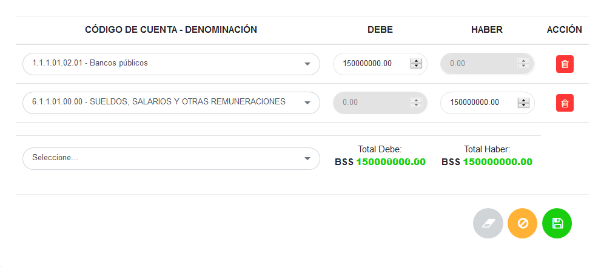
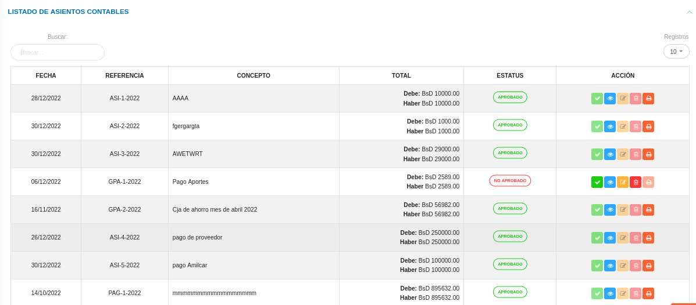

Gestión de Asientos Contables

El usuario selecciona el módulo de Contabilidad en el menú lateral de los módulos del sistema, ahí visualizara las opciones Configuración, Convertidor de cuentas, Asientos Contables y Reportes, debiendo pulsar Asientos Contables
Buscador de asientos contables
Esta funcionalidad se ubica en la sección principal de Asientos Contables, a través de esta herramienta es posible listar todos los registros de asientos contables aprobados o sin aprobar.
Buscar asientos contables:
- Dirigirse al Módulo de Contabilidad, luego a Asientos Contables y ubicarse en la sección Buscador de Asientos Contables (Figura 19).
- Haciendo uso de los botones de selección es posible filtrar los registros.
- Se presiona el botón Buscar
 y el sistema filtra estos registros y los muestra en la sección Listado de Asientos Contables.
y el sistema filtra estos registros y los muestra en la sección Listado de Asientos Contables.
Registrar asiento contable
- Dirigirse al Módulo de Contabilidad, luego a Asientos Contables y ubicarse en la sección Buscador de asientos contables.
- Haciendo uso del botón Crear
 ubicado en la esquina superior derecha de esta sección, se procede a registrar una nueva conversión.
ubicado en la esquina superior derecha de esta sección, se procede a registrar una nueva conversión. - Complete el formulario Asientos Contables (ver Figura 20).
Gestión de asiento contable
- Complete el formulario del apartado Gestión de asiento contable. Tenga en consideración completar los campos obligatorios que son requeridos para el registro de un asiento contable.
Nota
Los campos de selección del apartado Gestión de asientos contables incluyen información configurada previamente a través de los registros comunes del módulo de contabilidad y del sistema. Si se requiere incluir información diferente a la que se encuentra por defecto, se recomienda agregar estos registros en la configuración de registros comunes.
Para agregar tipo de moneda dentro del sistema acceda a Configuración > General > Registros Comunes.
Para agregar categorías de origen dentro del sistema acceda a Contabilidad > Configuración > Registros Comunes > Categorías de Origen.
Asiento Contable
- Complete el formulario del apartado Asiento contable. Se formula el registro, ingresando la cuenta patrimonial y los datos numéricos de la partida doble (Debe y Haber). Cabe mencionar, que el sistema no permitirá guardar el asiento contable sin haber registrado en ambas partidas.
Para agregar cuentas patrimoniales acceda a Contabilidad > Congifuración > Registros Comunes > Catálogo de cuentas

- Presione el botón Guardar
 para registrar los cambios efectuados.
para registrar los cambios efectuados. - Presione el botón Cancelar
 para cancelar registro y regresar a la ruta anterior.
para cancelar registro y regresar a la ruta anterior. - Presione el botón Borrar
 para eliminar datos del formulario.
para eliminar datos del formulario. - Si desea recibir ayuda guiada, presione el botón
 .
. - Para retornar a la ruta anterior, presione el botón .
A continuación se muestra un registro de Asiento Contable para póliza de Nomina (Figura 25).

Gestionar asientos contables
La gestión de asientos contables se lleva a cabo a través del apartado Asientos Contables.
- Para acceder a esta sección debe dirigirse a Contabilidad y ubicarse en la sección Asientos Contables apartado Listado de asientos contables (ver Figura 26).
Desde este apartado se pueden llevar a cabo las siguientes acciones:
- Registrar asientos contables.
- Consultar asiento contable.
- Aprobar/Negar Asiento contable
- Imprimir Registro.
- Editar registros.
- Eliminar registros.

Registrar asientos contables
- Presione el botón Crear registro
 ubicado en la parte superior derecha del apartado Buscador de asientos Asientos Contables (ver Figura 21)
ubicado en la parte superior derecha del apartado Buscador de asientos Asientos Contables (ver Figura 21) - A continuación complete el formulario siguiendo los pasos descritos en el apartado Registrar asientos contables.
- Presione el botón Guardar para registrar los cambios efectuados.
Aprobar asientos contables
- Dirigirse al Módulo de Contabilidad, luego a Asientos Contables y ubicarse en la sección Listado de Asientos Contables (Figura 26).
- Identifique el registro de asiento contable que desea aprobar y presione el botón Aprobar
 ubicado en la columna titulada Acción.
ubicado en la columna titulada Acción. - Presione el botón Confirmar en la ventana emergente para aprobar el asiento contable.

Consultar registros
- Presione el botón Consultar registro
 ubicado en la columna titulada Acción de un registro de asiento contable que se prefiere consultar.
ubicado en la columna titulada Acción de un registro de asiento contable que se prefiere consultar.
- A continuación el sistema despliega una sección donde se describen los datos del asiento contable seleccionado.

Imprimir registro
- Presione el botón Imprimir regristro ubicado en la columna titulada Acción del registro del asiento contable que se desee seleccionar para imprimir el reporte.

- El sistema presenta en un documento PDF, el archivo generado con el asiento contable.
Editar registros
- Presione el botón Editar registro
 ubicado en la columna titulada Acción del registro de conversión de cuentas que se desee seleccionar para actualizar datos.
ubicado en la columna titulada Acción del registro de conversión de cuentas que se desee seleccionar para actualizar datos.

- Actualice los datos del formulario siguiendo los pasos descritos en el apartado Registrar asiento contable.
- Presione el botón Guardar para registrar los cambios efectuados.
Eliminar registros
- Presione el botón Eliminar registro
 ubicado en la columna titulada Acción del registro de asiento contable que se desee seleccionar para eliminar del sistema.
ubicado en la columna titulada Acción del registro de asiento contable que se desee seleccionar para eliminar del sistema.

- Confirme que esta seguro de eliminar el registro seleccionado a través de la ventana emergente, mediante el botón Confirmar y efectue los cambios.